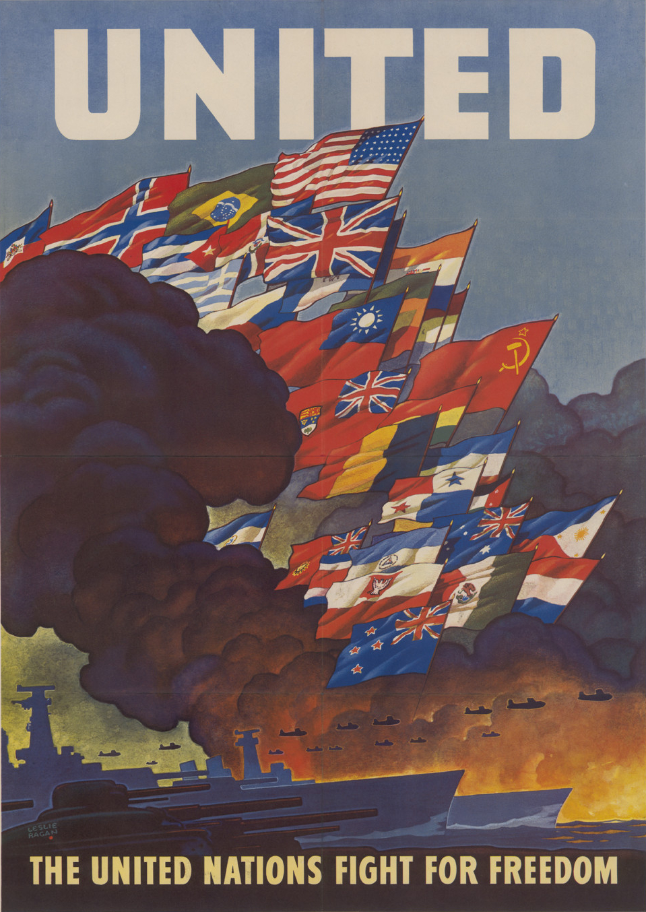
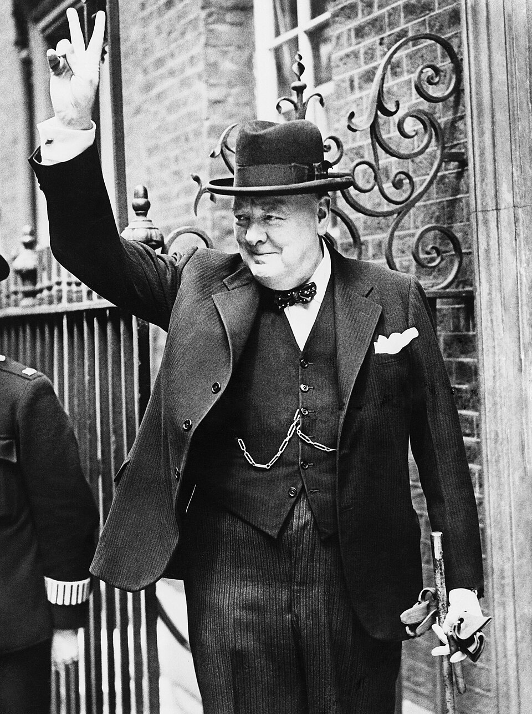
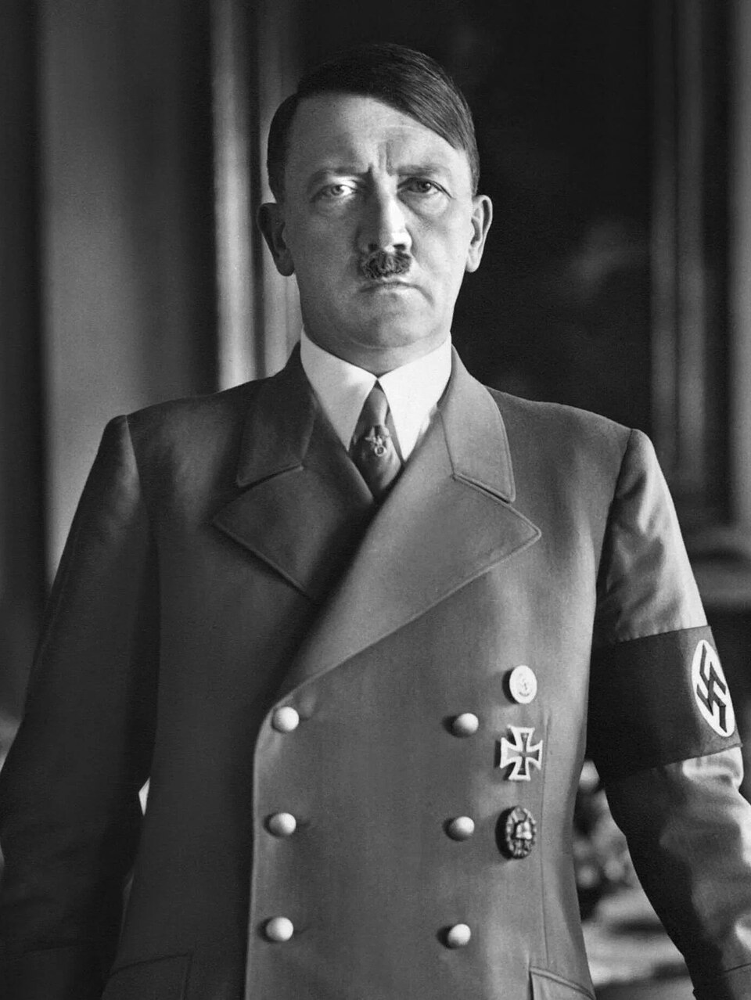
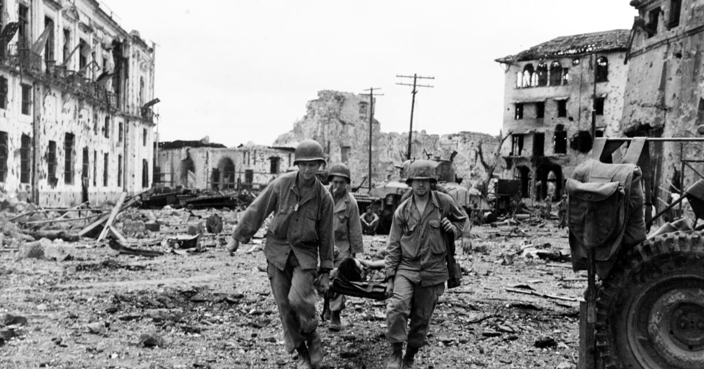
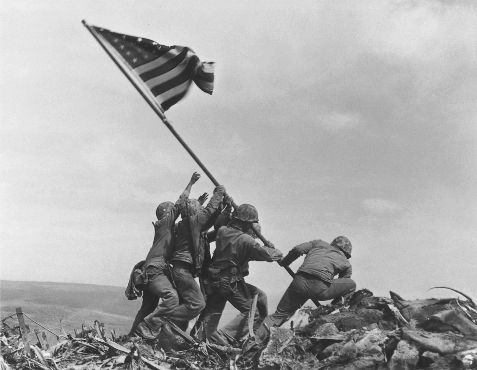
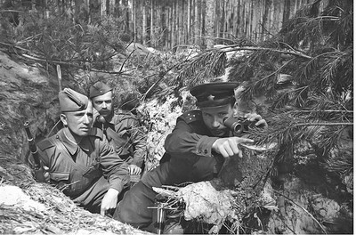

Page 2: The Combatants of World War II
Essential Question: Who were the combatants of World War II and why did they fight?
Answer to the Essential Question
The two main sides in World War II were the Allied Powers and the Axis Powers. The Allies eventually included countries such as Britain,
the Soviet Union, the United States, China, and France. Although these nations had different political systems and goals, they were united
by the need to defeat Axis aggression.
The Axis Powers were led by Germany, Italy, and Japan. They fought for expansion, authoritarian control, imperial conquest,
and ideologies rooted in militarism, fascism, and racial superiority. These conflicting goals turned the war into a struggle over territory,
government, human rights, and world power.
Comparing the Two Sides
| Side |
Main Countries |
Why They Fought |
Key Ideas / Goals |
| Allied Powers |
Britain, Soviet Union, United States, China, Free France |
To stop aggression, defend territory, protect allies, and defeat expansionist dictatorships |
Self-defense, collective security, survival, anti-fascism |
| Axis Powers |
Germany, Italy, Japan |
To expand territory, build empires, and dominate regions through force |
Fascism, militarism, imperialism, totalitarianism, racial superiority |
Artifacts

Artifact 1
Allied Powers Propaganda Poster
This poster reflects the Allied idea that the war was a fight against conquest and tyranny.
Allied nations did not all share the same political beliefs, but they cooperated because the Axis threatened their independence and international stability.
Source

Artifact 2
Britain and the Fight Against Nazi Expansion
Britain became one of the first major powers to continue resisting Hitler after the fall of France.
This artifact represents British determination to prevent German control of Europe.
Source

Artifact 3
Nazi Germany and Fascist Ideology
Nazi Germany was the leading Axis power in Europe. It fought to overturn the post-World War I order,
expand eastward, and build a racial empire under totalitarian rule.
Source

Artifact 4
Imperial Japan and Expansion in Asia
Japan was a key Axis power in the Pacific. Its leaders pursued imperial expansion to gain resources,
territory, and regional dominance.
Source

Artifact 5
The United States After Pearl Harbor
The United States entered the war after Japan attacked Pearl Harbor in December 1941.
Its industrial and military power became decisive to the Allied victory.
Source

Artifact 6
The Soviet Union Joins the Allied Side
The Soviet Union joined the Allied side after Germany invaded in Operation Barbarossa.
This artifact represents the Eastern Front, where some of the war's largest battles took place.
Source